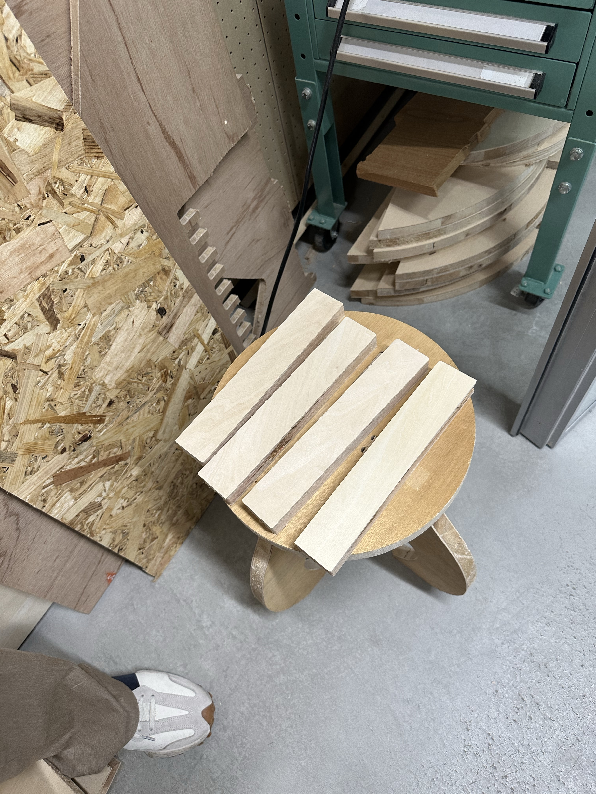
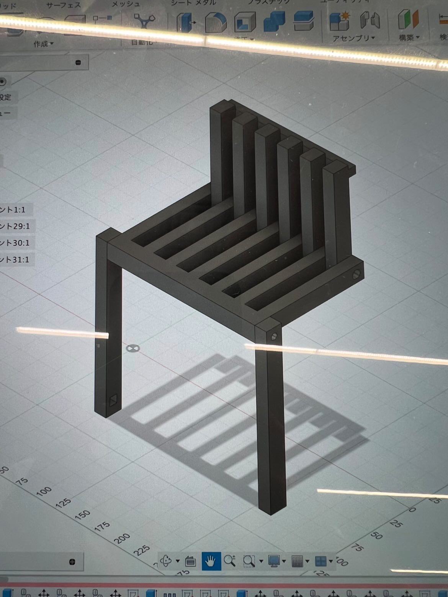
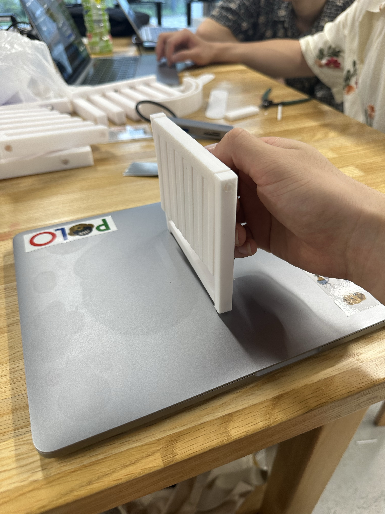
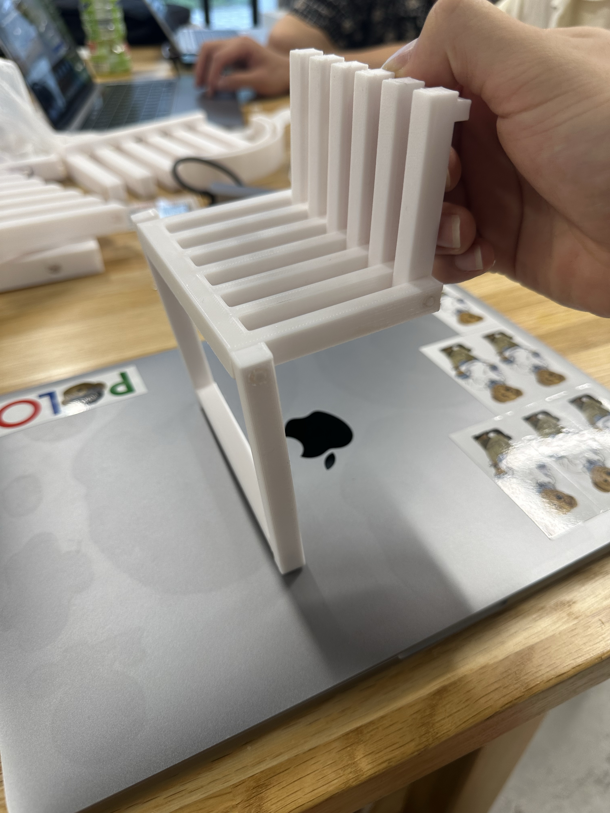

木材を使って椅子を作るときのなんとなくのサイズ感や強度などを知りたかったため、
とりあえずファブラボにあった木材を使って製作予定の椅子の等身大のパーツをいくつか作ってみました。

結果、木材に人が座った時に支えられるようなパーツが鉄でできた金具などのパーツになってしまい、再現性や量産性がかなり低いと感じたため、もう一度考え直すことにした。
ファブラボで制作することを活かして、接合部分は今ある金具を取り付けて接着させるのではなく、なんらかの構造や仕組みを考えて、金具を使わずに開閉できるような椅子を考えたい。
量産性を考えて3Dプリンタで製作することも視野に入れて、とりあえずfusion365でデータを作ってプロトタイプを制作したいと思います。

構造的にはかなりシンプル当初の予定通り3段式に折りたたむ椅子を作成しました。
出力結果


3Dプリンタで今まで通りの構造でスケールを小さくしてプロトタイプを制作した結果、やはり接合部分も3Dプリンタで作って組み立てると耐久性が乏しく,等身大で作った時に
人が座れるような耐久性が保てるのか心配になった。なので構造はそのままで素材を変えるのか、構造を変えて3Dプリンタで作るのか、
過去に立ち返って木材で作るのか、をしっかり実現できるのかどうかと言うところを重視してもう一度考える。